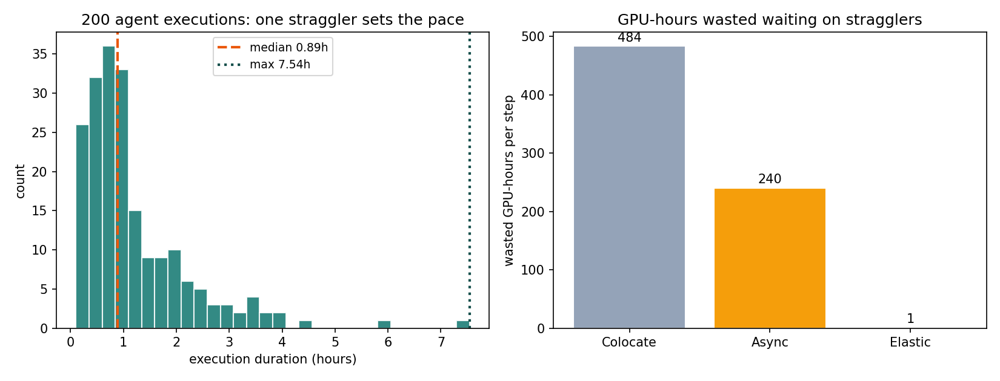
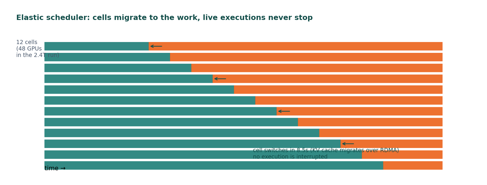
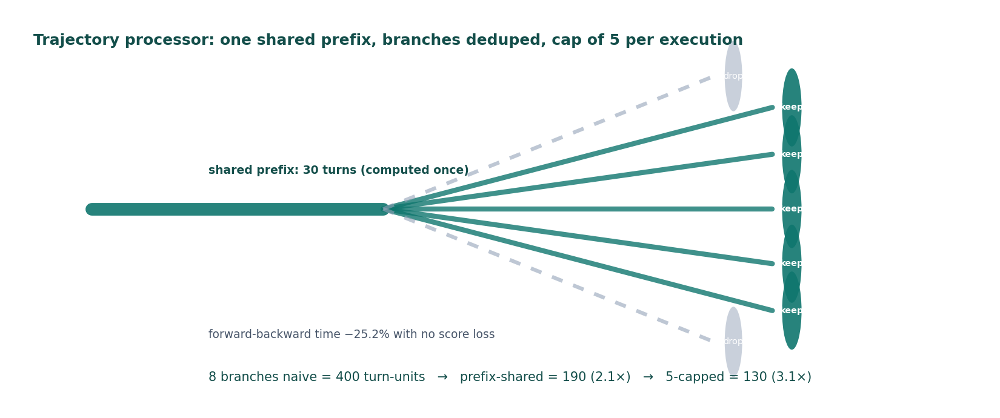
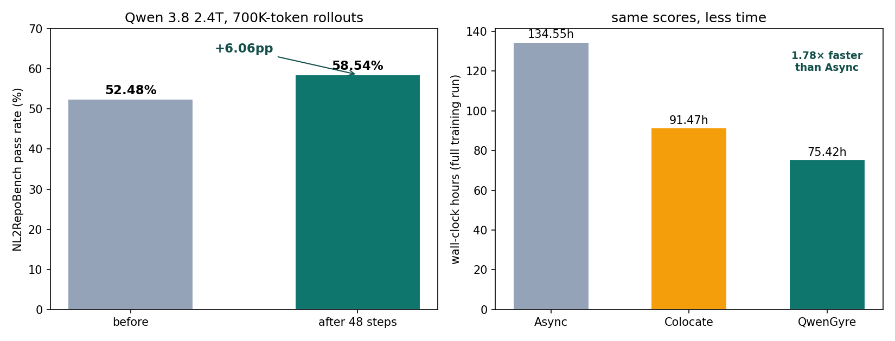

Your coding agent doesn't train on code snippets anymore. The frontier trains on full workdays: one execution can run for hours, hit hundreds of tool calls, and burn through nearly a million tokens. Alibaba's Qwen team just published the machinery that makes that training tractable — QwenGyre, an elastic reinforcement-learning framework for what they call "xLong-horizon" agents (arXiv 2609.33848).
The headline numbers: on their flagship Qwen 3.8 2.4T with ~700K tokens per rollout, NL2RepoBench went from 52.5% to 58.5% in 48 steps, and the full run took 75.42 hours instead of 134.55 (Async baseline) or 91.47 (Colocate) — up to 1.85× faster at matched scores.
The ELI5 version
Training an agent with RL is like coaching a junior engineer: they try a task, you score the result, they adjust. But when one "try" takes 3 hours and another takes 20 minutes, two things break:
- The straggler tax. GPUs sit idle waiting for the slowest execution to finish — like a classroom where everyone stares at the ceiling until the last kid hands in the exam.
- The redundancy tax. One execution branches into many possible paths that mostly share the same beginning. Training on all of them naively means recomputing the same prefix over and over.
QwenGyre attacks both. It's not a model — it's the training system around the model.

How it works, part 1: the elastic scheduler
Normal RL setups pick one of two bad options. Colocate: all GPUs do rollouts, then all GPUs train — the whole pool waits for the slowest agent execution. Async: split the pool statically, half rollouts, half training — but neither side can borrow the other's spare GPUs, so capacity sits stranded while stragglers dribble in.
QwenGyre organizes hardware into independently switchable cells. As rollout executions finish, cells flip from inference to training on the fly. Live harness runs are never interrupted: model requests get rerouted to the remaining rollout engines mid-flight, KV caches migrate over RDMA (no recomputation), and the freed cells join the ongoing training step as extra data-parallel replicas.
The switching is fast: 8.52 seconds rollout→training, 3.46 seconds back. Against executions that last hours, that's rounding error.

How it works, part 2: the trajectory processor
The second innovation is how training samples are built from branching agent histories. The framework:
- Reconstructs branching histories as prefix-shared trajectory trees — the shared beginning of an execution is stored and trained on once, not once per branch.
- Scores partial progress — timed-out executions aren't thrown away; the preserved workspace is scored as-is, so an 80%-done 3-hour run still teaches.
- Deduplicates redundant paths — at most 5 trajectories per execution. Evaluator failures are excluded rather than scored zero (a broken grader shouldn't poison the signal).
The 5-trajectory cap matched uncapped scores while cutting forward-backward time 25.2%. At 8 branches per execution, prefix sharing alone gives 2.1×, and the cap pushes it to 3.1×.

The state of the art
The scale test is serious: Qwen 3.6 122B on 24–32 nodes, and Qwen 3.8 2.4T on 192 nodes (4 cells of 48), with rollouts served by SGLang and training in Megatron, running inside an unmodified black-box harness (Claude Code 2.1.220 — the framework doesn't get to cheat by changing the agent's tools).

What the numbers say:
- +6.06pp on NL2RepoBench (52.48% → 58.54%) in 48 steps — repository-level coding, not quiz questions.
- 1.78× faster than Async, 1.85× faster than Colocate end-to-end. The gap shrinks when many queries hit the timeout (worst case 1.21× on the 2.4T) — stragglers still bite, just less.
- 8.5s / 3.5s cell switches — the migration machinery costs nothing measurable.
The honest caveat: QwenGyre's numbers are vendor-reported, and the paper links no public code release. Treat the framework as an existence proof of a technique, not a download.
Takeaways
- The agent frontier moved to the training loop. When single executions run hours and cost ~1M tokens, the bottleneck isn't the model — it's GPU scheduling and trajectory hygiene. The harness and the RL system around the model now decide who wins, exactly the way agent harnesses decided capability earlier this year.
- Elasticity beats partitioning. Any time you have highly variable work, fixed splits strand capacity. Let the hardware follow the work.
- Don't discard partial work. Scoring timed-out executions on their preserved state recovers a learning signal that naive "reward = 0" throws away — in my toy simulation above, the naive rule kills the signal entirely while partial scoring stays correlated 0.91 with true capability.
- If you build agents: long-horizon evaluation is now the benchmark that matters (NL2RepoBench, TerminalBench). If your agent can't hold a task together for an hour, no amount of prompt engineering closes the gap — it has to be trained there.